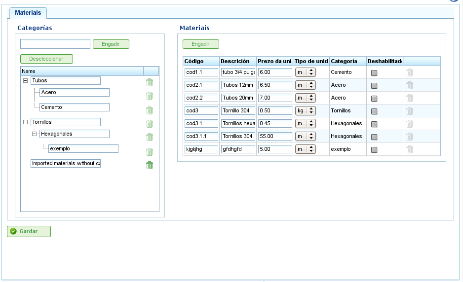

Contents
Пользователи могут управлять базовой базой данных материалов, организованных по категориям.
Категории — это контейнеры, которым можно назначать конкретные материалы и другие категории. Они хранятся в иерархической древовидной структуре, так как материалы могут принадлежать листовым категориям или промежуточным категориям.
Для управления категориями пользователи должны выполнить следующие шаги:
Чтобы вставить категорию в дерево категорий, пользователи должны сначала выбрать родительскую категорию в дереве, а затем нажать «Добавить».

Экран администрирования материалов
Для управления материалами пользователи должны выполнить следующие шаги:
Назначение материалов элементам заказа описано в главе о «Заказах».